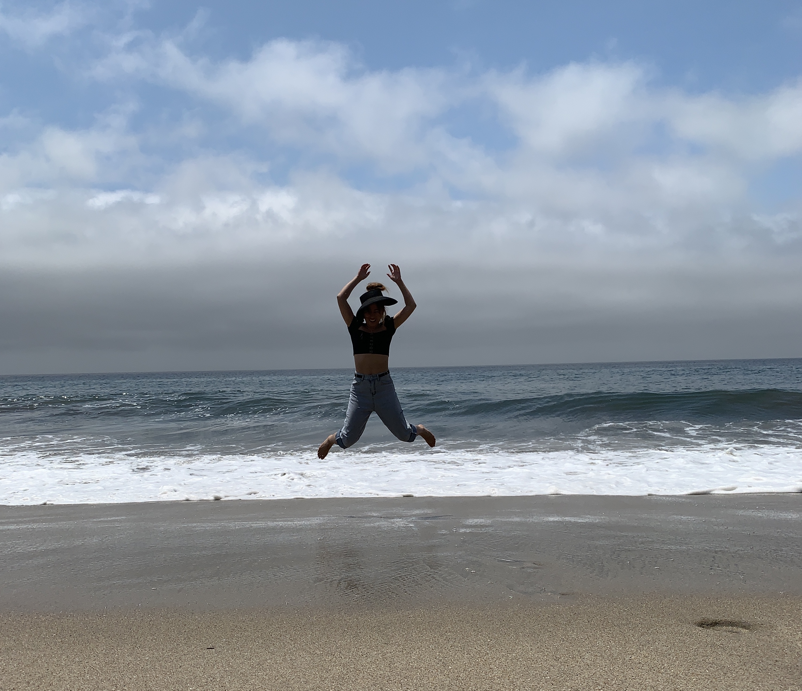

Hi, I'm a junior studying cs and ds at UC Berkeley! ✏️ Currently, my interests are a mix of data modeling and front end design, but I'm open to learning about new opportunities in these two fields.
I'm currently a UGSI for Data 100 and am in love with teaching the course. Check out my teaching tab for resources!
Outside of class I enjoy experimenting with art and design. You'll also find me enjoying the sun while hiking or taking spontaneous beach trips.
This website is currently under construction, but if you have any suggestions, feel free to reach out to me at oliviaqin@berkely.edu